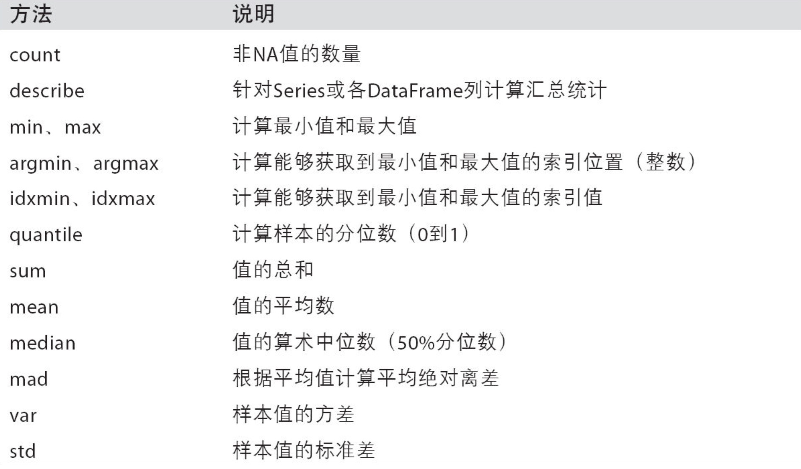

Pandas统计计算和描述
示例代码：
import numpy as np
import pandas as pd
df_obj = pd.DataFrame(np.random.randn(5,4), columns = ['a', 'b', 'c', 'd'])
print(df_obj)
运行结果：
a b c d
0 1.469682 1.948965 1.373124 -0.564129
1 -1.466670 -0.494591 0.467787 -2.007771
2 1.368750 0.532142 0.487862 -1.130825
3 -0.758540 -0.479684 1.239135 1.073077
4 -0.007470 0.997034 2.669219 0.742070
常用的统计计算
sum, mean, max, min…
axis=0 按列统计，axis=1按行统计
skipna 排除缺失值， 默认为True
示例代码：
df_obj.sum()
df_obj.max()
df_obj.min(axis=1, skipna=False)
运行结果：
a 0.605751
b 2.503866
c 6.237127
d -1.887578
dtype: float64
a 1.469682
b 1.948965
c 2.669219
d 1.073077
dtype: float64
0 -0.564129
1 -2.007771
2 -1.130825
3 -0.758540
4 -0.007470
dtype: float64
常用的统计描述
describe 产生多个统计数据
示例代码：
print(df_obj.describe())
运行结果：
a b c d
count 5.000000 5.000000 5.000000 5.000000
mean 0.180305 0.106488 0.244978 0.178046
std 0.641945 0.454340 1.064356 1.144416
min -0.677175 -0.490278 -1.164928 -1.574556
25% -0.064069 -0.182920 -0.464013 -0.089962
50% 0.231722 0.127846 0.355859 0.190482
75% 0.318854 0.463377 1.169750 0.983663
max 1.092195 0.614413 1.328220 1.380601
常用的统计描述方法：
